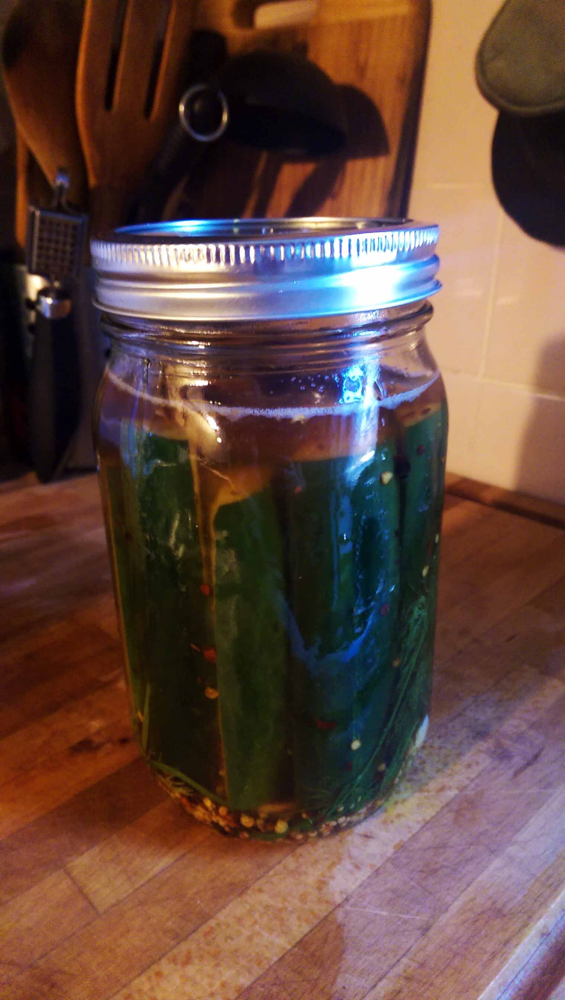

Lately, I’ve been getting more and more into cooking. I’ve always enjoyed it, and often found very pleasing parallels between music and food. I also love spicy beer pickles!
Such as…
Learning the basic fundamentals/techniques. Initially sticking closely to charts/recipes. Developing enough technique and taste/musicality to elaborate on, and embellish existing recipes. Taking what is provided to you, ingredients and musical ideas, and improvising a complementary concoction. Crafting your own compositions…
Basically the same thing.
Which leads me to this: Beer pickles.
I like beer. I like pickles. On a whim one day, I decided to look up whether I could combine the two. To my pleasure, I found a simple recipe to follow, and the results were fantastic. Since then, I’ve tinkered with the recipe a bit. Here’s what I came up with.
Spicy Beer Pickles
Ingredients (makes enough for 2 x 1 litre / 1 quart)
- 8-10 Kirby cucumbers
- 2 cups of beer
- 1 1/2 cups of apple cider vinegar
- 3 tablespoons of kosher salt
- 1 bunch of fresh dill
- 1 head of garlic, peeled and halved
- red pepper flakes
- mustard seeds
- whole black pepper corns
Directions
First things first. Give those cucumbers a ice cold bath. Some people leave them here for a couples of hours, some for 30 minutes or less. For me, it varies depending on how patient I am.

While the buggers are chilling, get your jars into some boiling water and sterilize them. If you’re using mason jars 0nce the water has come to a boil, and you’ve rolled the jars around in it, drop to a simmer and plop the seals for the jars into the water.
Prepare your brine. Add the salt, beer, and vinegar to a pot, and start heating. You want the salt to dissolve, and for the liquid to get to a boil right before you pour it over the cucumbers. More on that in a bit.
I used Harpoon IPA, but use whatever you want. I’ve used Torpedo Extra IPA before with good results. Try it with a different type of beer, and let me know how it goes! I suspect a nice stout would work pretty well…
Get your garlic, dill, red pepper flakes, mustard seeds, and black pepper corns handy.
By now, your jars should be nicely boiled, cucumbers totally chilled, and your brine should be simmering away close to boiling.
Take your cucumbers and chop them into fourths lengthwise.
Take your jars. Drop in the dill, garlic, mustard seed, black pepper, and red pepper flakes (divided between your jars).


Wedge as many cucumber spears into each jar as you can, packing them in nice and snug. Then pour the recently boiled brine over top, until the spears are covered. You’ll want to leave a bit of space below the top of the jar.
Fit the seal to the top, then screw the rim down nice and tight. Immediately turn the jar upside down. As the air trapped in the jar cools, the seal will be pulled inwards, creating a vacuum. You might hear the lid “pop” as this happens.
Allow to cool. Then throw them in the fridge! (technically, if the jar has sealed properly, refrigeration isn’t necessary, but if you have room for a couple of jars, why not?)
Leave the pickles alone for about 7 days, then sample your creation with abandon!
